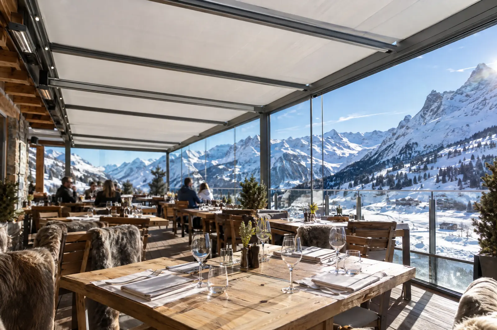

Bioclimatique
Astano Hard Top, Bavona
Lames orientables de 0 à 130°, sur quatre pieds ou entre deux murs, étanches à la pluie, très résistantes au vent.
- Lames 0 à 130°
- Éclairage en option
Lames orientables, toiles rétractables ou toit vitré : une pièce de plus, dehors, d’avril à octobre. Et l’hiver aussi, avec les lames chauffantes.

La rigueur suisse, pour les toits de terrasse fixes ou ouvrants.
Bioclimatique
Lames orientables de 0 à 130°, sur quatre pieds ou entre deux murs, étanches à la pluie, très résistantes au vent.
Toit vitré
Une toiture vitrée, avec toile d’ombrage en option et côtés fermés en verre ou en toile.

La gamme la plus large, du toit plat à toile au bioclimatique haut de gamme.
Bioclimatique
Lames orientables de 0 à 135°, deux vérins de 1200 newtons pour une fermeture parfaite, lames chauffantes en option contre la neige.
Toit plat 90°
Toile étanche rétractable, sur pieds ou contre le mur. Côtés en toile ou en verre.
Inclinée
Toile étanche inclinée, côtés et avant fermables par des toiles verticales.
Tendue
Toile inclinée tendue par deux vérins, zippée dans les coulisses pour tenir au vent, même sur une véranda.
L’effet cabriolet.
Cabriolet
Des lames qui s’orientent ou se rétractent entièrement pour ouvrir le ciel, côtés fermés par des stores antivent ou des vitrages coulissants.
Pour faire de la pergola une vraie pièce à vivre.
Lumière
Intégrées aux poutres ou aux lames, pilotées avec la pergola.
Confort
Chauffage radiant, haut-parleurs Bluetooth intégrés à la structure.
Fermeture
Vitrages coulissants ou pivotants, screens ZIP sur les côtés.